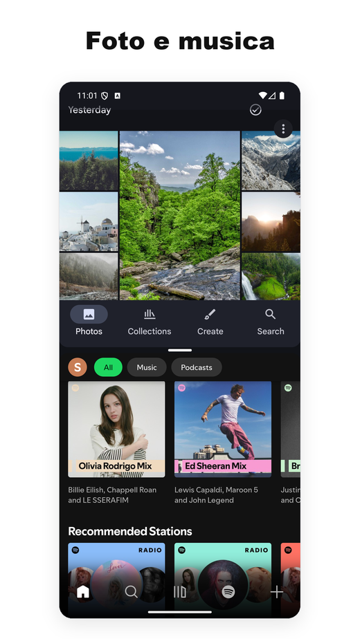
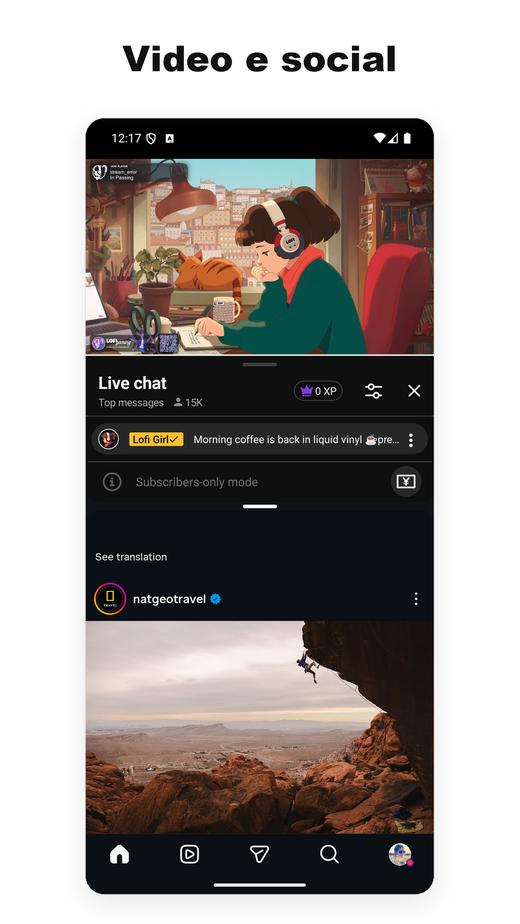
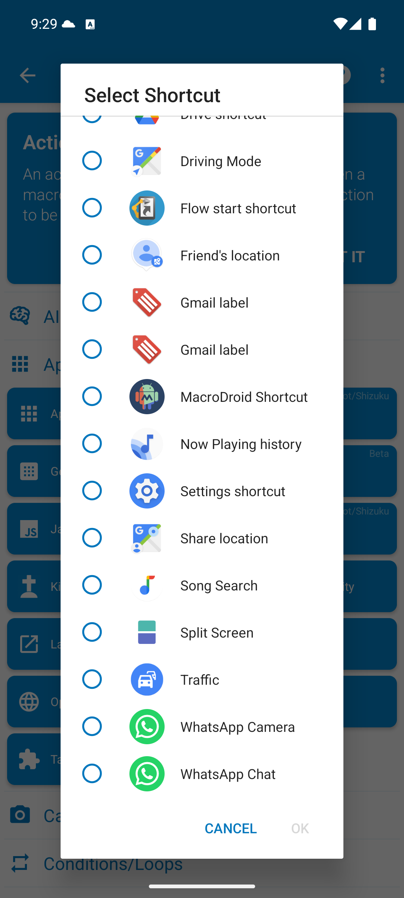
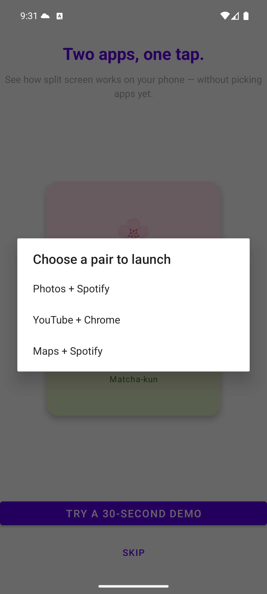
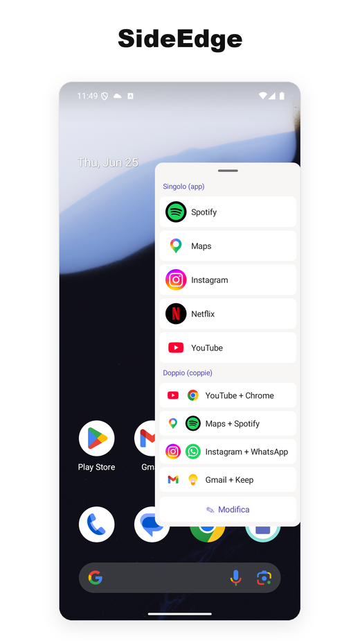
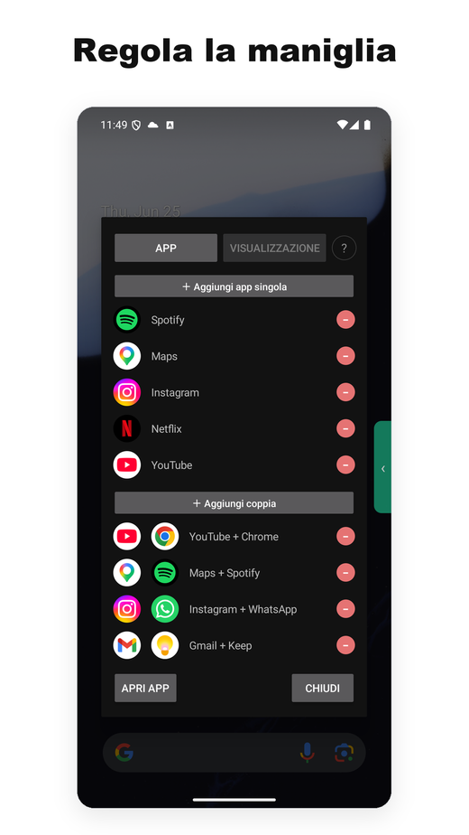

- Una delle poche utility di schermo diviso per Android che continuano a funzionare in modo affidabile su Android 15, 16 e 17.
- Gran parte della concorrenza ha smesso di funzionare quando Google ha modificato le API sottostanti; noi abbiamo continuato a pubblicare aggiornamenti a ogni transizione recente del sistema.
- Zero pubblicità, nessun accesso a internet richiesto. Il cuore dello schermo diviso non richiede alcun Servizio di Accessibilità su Android 12L+; la barra laterale opzionale SideEdge ne usa uno solo per nascondere la sua maniglia sulle schermate di accesso e password. Leggera, senza servizi in background.
- Il piano gratuito copre l'uso principale. L'abbonamento Pro costa circa 1 $/mese, più o meno un decimo del concorrente a pagamento più vicino.
- Sugli smartphone l'App Pair nativa è in pratica un'esclusiva Samsung — Android 15 l'ha aggiunta a livello di sistema operativo, ma solo per i dispositivi con schermo grande, lasciando fuori i Pixel (e ogni altro telefono non Samsung).
- Se sei passato a un Pixel e senti la mancanza dell'App Pair del Galaxy, è la sostituzione più vicina che abbiamo visto.
- Contesto: perché "App Pair" conta su Android
- Cosa fa davvero Split Screen Launcher
- SideEdge — lancia le tue coppie da qualsiasi schermata
- Un'alternativa all'App Pair di Samsung per Pixel
- Il problema Android 15/16 — e perché molti concorrenti si sono rotti
- Permessi e privacy
- Confronto con altre app di schermo diviso
- Prezzo
- A chi è rivolta l'app (e chi può saltarla)
- Riepilogo
1. Contesto: perché "App Pair" conta su Android
Android supporta il multitasking in schermo diviso dalla versione 7.0 (Nougat, 2016). Quello che non ha mai offerto a livello di sistema è salvare combinazioni di due app e lanciarle insieme. Samsung l'ha aggiunto a One UI come "App Pair" già nel 2017, e chi passa da Galaxy a Pixel si accorge quasi subito che manca.
La soluzione è installare un launcher di terze parti che automatizzi il processo in due passaggi: aprire l'app A, poi aprire l'app B nella finestra adiacente. Google Play ne elenca decine, ma l'ecosistema è più caotico di quanto sembri: ogni versione di Android cambia il modo in cui si attiva lo schermo diviso, e la maggior parte di queste app non viene aggiornata.
Android 15 (2024) ha finalmente introdotto una funzione App Pair nativa a livello di sistema operativo — ma Google l'ha limitata ai soli dispositivi con schermo grande. Il Pixel Tablet l'ha ricevuta; il Pixel 9 Pro no. A metà 2026, la situazione sugli smartphone è la seguente:
- Samsung Galaxy — App Pair nativa dal 2017 (tramite Edge Panel)
- Pixel (modelli classici, esclusi Tablet e Fold) — assente
- Xiaomi, OnePlus, Oppo, Realme, Vivo, Motorola, Nokia, Sony, ASUS — assente
Quindi, sugli smartphone, l'App Pair nativa è di fatto una funzione esclusiva Samsung. Tutti gli altri devono affidarsi allo schermo diviso manuale di Android (aprire l'app, tenere premuto sulle Recenti, trascinare, ripetere) oppure installano un launcher di terze parti come il nostro.
Un'alternativa all'App Pair di Samsung per Pixel e Android puro
Se sei passato da un Galaxy a un Pixel — o a un qualsiasi telefono con Android puro — e cerchi un'alternativa all'App Pair di Samsung, è proprio questo il vuoto che Split Screen Launcher è stato pensato per colmare. Ottieni lo stesso comportamento "lancia entrambe le app affiancate con un tocco", senza bisogno di un dispositivo Samsung o dell'Edge Panel.
È anche una delle poche opzioni che è ancora un'app di schermo diviso funzionante su Android 15, 16 e 17 — senza pubblicità, senza SDK di tracciamento e senza permesso di Accessibilità per il cuore dello schermo diviso su Android 12L e successivi (la barra laterale opzionale SideEdge è l'unica eccezione). La maggior parte dei vecchi strumenti per coppie di app si appoggia a scorciatoie di sistema che le versioni recenti di Android hanno chiuso (nella sezione 3 più sotto spieghiamo perché); questa raggiunge lo schermo diviso attraverso una via che abbiamo mantenuto funzionante a ogni aggiornamento del sistema.
2. Cosa fa davvero Split Screen Launcher
Split Screen Launcher è un'utility a scopo unico. Scegli due app, dai un nome alla coppia ("Tragitto", "Lavoro", "YouTube + Instagram") e la coppia compare come una riga nell'app. Toccarla apre entrambe le app fianco a fianco.


Questo è praticamente tutto l'insieme delle funzioni. Nessun browser integrato, nessun widget flottante, nessuna integrazione con la barra delle notifiche. L'app è leggera — pochi megabyte — e non esegue nulla in background.
Esempi di coppie usate durante i test:
- Google Maps + Spotify — alla guida
- YouTube + Instagram — second screen
- Chrome + Google Keep — ricerca con note
- Gmail + Slack — smistamento lavoro
- Calcolatrice + Chrome — confronto prezzi tra schede
Un caso d'uso che non avevamo previsto: l'auto. Un utente ci ha raccontato di usare Split Screen Launcher sull'AI box Android del proprio veicolo, abbinando Maps + Spotify per la navigazione con la musica — e passando a Maps + Netflix per chi siede sul sedile del passeggero. Dato che lanciare una coppia è un singolo tocco, si adatta a un sistema di infotainment molto meglio del tenere premuto nel menu delle Recenti.
Attiva le tue coppie in automatico — MacroDroid, Automate, Tasker
Un altro caso d'uso inatteso è arrivato da un angolo completamente diverso: una moto. Un motociclista che usa l'app su un tablet montato sul manubrio voleva che la sua automazione MacroDroid aprisse da sola una coppia salvata — una macro attivata dall'accensione del motore che avvia lo schermo diviso senza alcun tocco durante la marcia. Quella richiesta è diventata una funzione. Dalla versione 3.0.4, MacroDroid può lanciare una coppia salvata tramite il selettore standard di scorciatoie di Android, così una macro attiva la divisione esattamente come attiva qualsiasi altra azione. Non abbiamo testato singolarmente altri strumenti di automazione come Tasker o Automate, ma poiché questa funzione si affida a quel selettore Android standard piuttosto che a qualcosa di specifico dell'app, dovrebbero funzionare allo stesso modo. È una funzione Pro, strettamente limitata al lancio delle coppie pre-salvate. Se non usi strumenti di automazione questo non ti riguarderà — ma per chi usa il telefono in viaggio a mani libere, colma il divario tra "un tocco" e "nessun tocco".
Configurazione in MacroDroid
- Nel tuo macro, aggiungi un'Action → Applications → Launch Shortcut.
- Nell'elenco "Select Shortcut", scegli Split Screen.
- Seleziona la coppia salvata specifica che vuoi attivare.
- Associala al trigger che preferisci — un dispositivo Bluetooth che si connette, un caricatore che viene inserito, o un orario del giorno.
Tutto qui. Quando il trigger si attiva, la coppia si apre interamente da sola. Ad esempio, puoi impostarlo in modo che il monitor della pressione degli pneumatici e l'app per le chiamate si avviino nel momento in cui il motore dell'auto parte, oppure far apparire la navigazione e la musica non appena il telefono si connette al Bluetooth dell'auto.


Backup ed esportazione
Un dettaglio facile da perdere ma che vale la pena sottolineare: i dati delle coppie si esportano in un file di backup. Sembra banale, ma diversi concorrenti della categoria conservano le coppie nello storage privato dell'app senza alcun percorso di esportazione — cambiare telefono significa ricostruire ogni coppia a mano. Abbiamo fatto di backup/ripristino una funzione di prima classe proprio perché una migrazione Pixel verso Pixel recuperi l'intero set in pochi secondi.
Una schermata iniziale pulita
Vale la pena segnalare subito un'altra scelta di design: per impostazione predefinita, le coppie vivono dentro l'app — non vengono create icone nella schermata iniziale. Il motivo è in parte semplicità (la schermata iniziale non si riempie di icone di coppie) e in parte architetturale: l'app non resta legata a un launcher specifico (Pixel, Nova ecc.). Come detto nella sezione 3, i launcher che dipendono dalle scorciatoie sono proprio quelli che tendono a rompersi nelle transizioni ad Android 15 e 16; restare dentro l'app rende più fluido il passaggio da un telefono all'altro.
Un'azione opzionale per fissare una coppia in home consente agli utenti Pro di lanciare una coppia con un singolo tocco direttamente dalla schermata iniziale. Volevamo mantenere intatta la postura originale di "schermata iniziale semplice" e allo stesso tempo rispondere all'esigenza di "voglio lanciare lo schermo diviso direttamente da un'icona in home". L'icona mostrata in home impila verticalmente le due icone delle app, così la coppia resta visivamente distinta dalle normali icone del launcher.
SideEdge — lancia le tue coppie da qualsiasi schermata
La versione 3.0 aggiunge SideEdge: una barra laterale che estrai con uno swipe dal bordo dello schermo. Elenca le coppie e le singole app salvate, così puoi far partire uno schermo diviso — o saltare direttamente a una sola app — da qualsiasi schermata, senza dover prima tornare alla schermata iniziale.
Se vieni da un Galaxy, è questa la parte che ti sembrerà familiare. L'Edge Panel di Samsung è il modo in cui molti lanciavano le App Pair su One UI — una linguetta sul lato dello schermo che fa scorrere fuori un vassoio di scorciatoie. SideEdge è la nostra interpretazione di quell'idea, portata su qualsiasi telefono o tablet Android. Non è un sostituto completo della versione Samsung, ma ti dà un'esperienza simile — e, come il resto dell'app, è senza pubblicità. Se cercavi un'alternativa all'Edge Panel su Pixel o Android puro, è una delle opzioni più vicine che abbiamo trovato.


Una maniglia flottante che si trovasse sopra una schermata di accesso o password ti impedirebbe di scriverci dentro. Per questo SideEdge usa un Servizio di Accessibilità per un unico compito ristretto — riconoscere quelle schermate di sicurezza e spostare la maniglia per non intralciare la digitazione, riportandola al suo posto quando hai finito. Non legge, raccoglie o trasmette mai il contenuto dello schermo. Tutti i dettagli sono più sotto, in Permessi e privacy.
A chi è rivolta l'app (e chi può saltarla)
Prima di immergerci nel lato tecnico, ecco un rapido check di compatibilità per decidere se vale la pena continuare a leggere.
Ti conviene se…
- Usi regolarmente le stesse due app insieme (mappe + musica, e-mail + chat)
- Sei su Pixel o Android puro e ti manca l'App Pair di Samsung
- Preferisci app senza pubblicità o SDK di tracciamento
- Usi Android 12L o più recente (niente permesso di Accessibilità per il cuore dello schermo diviso; lo usa solo SideEdge)
- Vuoi qualcosa che continui a funzionare a ogni salto di versione del sistema
Saltala se…
- Lo schermo diviso lo usi raramente
- Vuoi un widget flottante, lancio via gesti o un'automazione avanzata (oltre al semplice lancio di una coppia salvata)
- Hai un Samsung — l'App Pair integrato in One UI è già eccellente
- Sei su una skin Android fortemente personalizzata (MIUI/HyperOS, OxygenOS, ColorOS, MagicOS, EMUI/HarmonyOS) — quei produttori ne modificano le meccaniche interne, quindi il comportamento su quei dispositivi non è garantito
Ti interessa ancora? Il resto dell'articolo copre il contesto tecnico — perché Android 15 e 16 hanno messo in crisi la maggior parte delle alternative e le scelte di design dietro il nostro approccio.
3. Il problema Android 15/16 — e perché molti concorrenti si sono rotti
Questa è la parte interessante, e il motivo per cui la maggior parte delle app concorrenti ha smesso di funzionare.
Storicamente, i launcher di schermo diviso si sono appoggiati a un manipolo di API di sistema che Google ha via via limitato o rimosso. Ogni nuova release di Android ha eroso i metodi con cui le app di terze parti possono lanciare due app affiancate. Android 15 e 16 in particolare hanno chiuso i percorsi più comuni. Gli aggiramenti a livello shell falliscono in modo simile.
In parole semplici: i "trucchi" che le app di terze parti usavano per far entrare il telefono in modalità divisa non funzionano più su Android 15 e 16. La maggior parte delle app di questa categoria non ha mai rilasciato una correzione.
Split Screen Launcher raggiunge lo schermo diviso in modo affidabile su Android 15, 16 e il nuovo Android 17 per un'altra via. Il meccanismo esatto ce lo teniamo per noi: trovare una combinazione che funziona su più versioni del sistema ha richiesto parecchia sperimentazione, e pubblicare la ricetta vorrebbe dire consegnarla a ogni concorrente che si è rotto. Possiamo dire che la nostra cronologia delle release riflette una manutenzione attiva attraverso le transizioni di Android 12, 12L, 14, 15, 16 e 17, e intendiamo tenere questo ritmo.
android:resizeableActivity="false" nel manifest — la fotocamera nativa e Google Files sono gli esempi più noti — e invece di formare una coppia si aprono semplicemente da sole a schermo intero (l'App Pair integrato di Samsung si comporta allo stesso modo).
(Soluzione alternativa) Attivando insieme
Impostazioni → Sistema → Opzioni sviluppatore → Forza dimensioni attività ridimensionabili e Consenti app non ridimensionabili in multi-finestra, anche queste app funzionano in schermo diviso. La schermata di Aiuto interna all'app ("Come usare le app contrassegnate 'Potrebbe non funzionare'") riporta i passaggi.
(Aggiornamento) Le versioni recenti gestiscono anche diverse app che prima resistevano all'abbinamento — tra cui Alexa e Google Calendar — così ora si aprono correttamente in schermo diviso.
4. Permessi e privacy
Su Android 12L e successivi, lanciare una coppia non richiede alcun permesso a runtime né il Servizio di Accessibilità — il flusso principale dello schermo diviso si affida interamente al comportamento standard del sistema Android. L'accesso aggiuntivo viene richiesto solo per due funzioni opzionali che puoi scegliere di attivare tu stesso.
① Rotazione automatica per singola coppia (permesso opzionale) — se la attivi per una coppia specifica, solo in quel momento l'app richiede il permesso "Modifica impostazioni di sistema" tramite la finestra di dialogo standard del sistema. Non viene mai chiesto in anticipo e non lo vedrai a meno che tu non usi quella funzione.
② Attivazione di SideEdge (funzione opzionale) — attivare la barra laterale richiede due permessi. Il primo è "Visualizza sopra altre app", che consente al pannello di apparire sopra lo schermo. Il secondo è il Servizio di Accessibilità, usato per un unico scopo ristretto e difensivo: rileva quando una schermata di sistema sensibile è attiva — un campo di accesso, un gestore di password, una richiesta di autenticazione a due fattori o un'app bancaria — e sposta automaticamente la maniglia e il pannello in modo che non si trovino mai sopra un'area di input sensibile. Non legge, raccoglie o trasmette mai il contenuto dello schermo. Entrambi i permessi rimangono completamente disattivati finché non vengono concessi esplicitamente tramite le finestre di dialogo del sistema Android.
Su Android 9 a 12 l'app richiede il permesso del Servizio di Accessibilità, perché è l'unica API disponibile. La scheda del Play Store dice esplicitamente che il servizio serve solo ad attivare la modalità schermo diviso. L'elenco dei permessi mostrato da Google Play è abbastanza corto da stare in una schermata — niente posizione, niente contatti, niente archiviazione e (in particolare) niente rete. Per questo angolo del Play Store è già qualcosa di insolito.
In parole semplici: sulle versioni vecchie di Android non esisteva un'API ufficiale per attivare lo schermo diviso, quindi il Servizio di Accessibilità era l'unica via praticabile. È un vincolo ereditato, non qualcosa che l'app usa per leggere il tuo schermo.
Per confronto: la maggior parte delle app gratuite di schermo diviso sul Play Store porta con sé SDK pubblicitari (AdMob, Unity, IronSource), il che significa dichiarare il permesso INTERNET e trascinarsi dietro il pacchetto di tracker. Abbiamo scelto invece la monetizzazione tramite un abbonamento minimale — in parte per mantenere pulita l'impronta dei permessi, in parte perché infilare SDK pubblicitari in un'utility così piccola ne farebbe lievitare la dimensione.
5. Confronto con altre app di schermo diviso
Prima del confronto vero e proprio conviene abbozzare il panorama. Le funzioni in stile "App Pair" sono state affrontate da più angolazioni:
- Implementazioni proprietarie dei produttori — l'App Pair di Samsung (dal 2017 con One UI), più le varianti di Xiaomi, OPPO e del vecchio LG. Funzionano solo sui dispositivi della rispettiva marca.
- Utility di terze parti — app autonome dedicate a questo unico caso d'uso. La maggior parte si basa su API di sistema che sono state ristrette o rimosse nelle versioni recenti di Android, motivo per cui il settore si è notevolmente assottigliato.
- Approcci basati sull'automazione — Tasker e strumenti simili permettono di scriptare il lancio in schermo diviso, ma si reggono sulle stesse primitive delle app dedicate, quindi ereditano le stesse rotture. Inoltre richiedono all'utente di costruire a mano ogni coppia. Dalla versione 3.0.4 abbiamo aggiunto un modo semplice per agganciarsi a questi strumenti: puoi lanciare una coppia salvata da MacroDroid (Pro) senza dover scriptare tu stesso la divisione. Poiché usa il selettore standard di scorciatoie di Android, dovrebbe funzionare anche con altre app di automazione come Tasker o Automate, anche se non le abbiamo testate dall'inizio alla fine.
Lo stesso panorama delle terze parti è frammentato. Google Play elenca decine di utility dedicate allo schermo diviso, ma l'attività e la qualità sono distribuite in modo molto disomogeneo.
Le app più scaricate della nicchia hanno accumulato milioni di installazioni, eppure i leader del settore sono sorprendentemente deboli: la più grande tra loro unisce quella grande diffusione a un punteggio mediocre nelle recensioni, mentre un'altra alternativa molto installata è stata aggiornata per l'ultima volta a metà 2025 e non ha ancora pubblicato una correzione per le modifiche alle API di schermo diviso di Android 15/16. Diverse altre praticano prezzi aggressivi, con costosi abbonamenti settimanali che hanno attirato critiche nelle community degli utenti.
Gli schemi ricorrenti del settore sono questi: la maggior parte delle app ha smesso di aggiornarsi intorno ad Android 11–12, contiene banner pubblicitari o interstitial invadenti, oppure richiede il permesso del Servizio di Accessibilità su tutte le versioni di Android (qui il cuore dello schermo diviso elimina quel requisito su Android 12L+; lo usa solo la barra laterale opzionale SideEdge). Questo rende il campo insolitamente sguarnito in termini di opzioni ben mantenute e con pochi permessi.
Un'app piccola, mantenuta attivamente e senza pubblicità come questa ha una strada abbastanza liscia per distinguersi — a patto che gli utenti la trovino.
6. Prezzo
Il piano gratuito limita il numero di coppie salvate in modo che l'utente possa provare l'intero flusso prima di decidere se l'app si adatta alle sue abitudini. Le funzioni principali — creare coppie, lanciarle, backup/ripristino — funzionano tutte senza pagare.
L'abbonamento Pro costa circa 1 $ al mese a seconda della regione, rimuove il limite di coppie e aggiunge l'organizzazione in cartelle e la personalizzazione dei colori delle icone. Abbonamento Google Play standard, disdetta in qualsiasi momento.
Per inquadrarlo: nella stessa categoria altre utility di schermo diviso a pagamento hanno piani premium che vanno da un pagamento una tantum di pochi dollari fino a costosi abbonamenti settimanali. A 1 $/mese siamo circa un ordine di grandezza sotto il concorrente a pagamento più vicino.
7. Riepilogo — a chi è rivolta
A chi è rivolta? Opinione onesta
Non crediamo che quest'app sia per tutti. Se non hai già un'abitudine fissa con due app (mappe + musica, e-mail + chat ecc.), probabilmente non la aprirai molto. Ma se sei su Android puro e dal passaggio a Pixel ti manca l'App Pair del Galaxy, l'abbiamo costruita per te — e abbiamo provato a renderla il modo meno compromesso di riavere quel comportamento. La posizione senza pubblicità e il prezzo di 1 $/mese sono scelte deliberate, e per questa categoria crediamo siano quelle giuste.
Pro
- Funziona davvero su Android 15, 16 e 17
- Nessuna pubblicità in nessun piano
- Leggera, nessun servizio in background
- Nessun permesso di Accessibilità per il cuore dello schermo diviso su Android 12L+ (lo usa solo SideEdge opzionale)
- Nessun permesso di rete dichiarato
- Piano Pro a ~1 $/mese, 10× più economico della concorrenza
- Backup / ripristino per il cambio di dispositivo
- Rotazione dello schermo opzionale per singola coppia (es. forzare una coppia video in orizzontale)
- Localizzazione in 15 lingue
Contro
- C'è un ritardo percepibile di ~1 secondo tra il tocco e la comparsa dello schermo diviso. È un costo prevalentemente lato sistema — entrare in modalità divisa su Android 12L+ comporta più transizioni di task che il sistema sequenzia internamente, quindi qualsiasi app della categoria si colloca tra 0,8 e 1,2 s. Non è un bug, ma è giusto saperlo
- Nessun widget flottante, nessun collegamento a gesti. Il lancio tramite app di automazione (MacroDroid) è supportato ma riservato al piano Pro e limitato all'avvio di una coppia salvata. Le scorciatoie nella schermata iniziale sono anch'esse opzionali (Pro), ma tutto il resto resta dentro l'app
- L'elenco di creazione coppie mostra tutte le app installate senza categorie, il che diventa faticoso oltre le ~60 app sul dispositivo
- Sviluppatore solo, quindi se incappi in un caso limite su una ROM non Pixel non aspettarti un fix in giornata